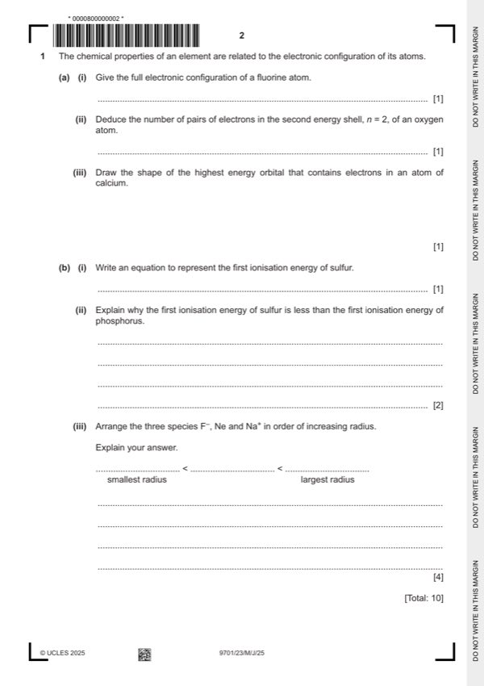

Question 1

Original paper page 2
Part 1(a)(i) — solution
- 1s2 2s2 2p5 1
Mark points
- 1s2 2s2 2p5 1
Part 1(a)(ii) — solution
2 (pairs) 1
Mark points
- Include the ideas shown in the solution above.
Part 1(b)(i) — solution
- S(g) → S+(g) + e(-) OR S(g) – e(-) → S+(g) 1
Mark points
- S(g) → S+(g) + e(-) OR S(g) – e(-) → S+(g) 1
Part 1(b)(ii) — solution
- [M1] pair of electrons in a 3p orbital (in S) repel each other 2
- [M2] outweighs the effect of increase in nuclear charge
Mark points
- [M1] pair of electrons in a 3p orbital (in S) repel each other 2
- [M2] outweighs the effect of increase in nuclear charge
Part 1(b)(iii) — solution
- [M1] Na+ < Ne < F– 4
- [M2] (all have) same number of electrons / isoelectronic
- [M3] larger species has smaller nuclear charge / fewer protons
- [M4] (so) smaller nuclear attraction (to outer electrons)
Mark points
- [M1] Na+ < Ne < F– 4
- [M2] (all have) same number of electrons / isoelectronic
- [M3] larger species has smaller nuclear charge / fewer protons
- [M4] (so) smaller nuclear attraction (to outer electrons)